Аниме
Аниме - это японская анимация.
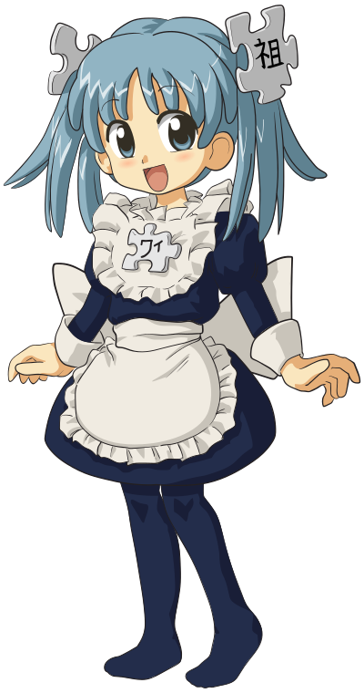
В отличие от мультфильмов других стран, предназначенных в основном для просмотра детьми,
большая часть выпускаемого аниме рассчитана на подростковую и взрослую аудитории.
История
История аниме берёт начало в XX веке,
когда японские кинорежиссёры начинают первые эксперименты с техниками мультипликации, изобретёнными на Западе.
Старейшая из известных сохранившихся японских анимаций — «Katsudo Shashin» 1907 года длится всего 3 секунды.
Основоположником традиций современного аниме стал Осаму Тэдзука — он заложил основы того, что позднее
преобразовалось в современные аниме-сериалы. Например, Тэдзука заимствовал у Диснея и развил манеру использования
больших глаз персонажей для передачи эмоций; именно под его руководством возникали первые произведения, которые
можно отнести к ранним аниме.Первой работой Тэдзуки стала манга «Shin Takarajima». Впоследствии он создал
мангу под названием Tetsuwan Atomu (Astro Boy), которая и стала первым известным аниме.
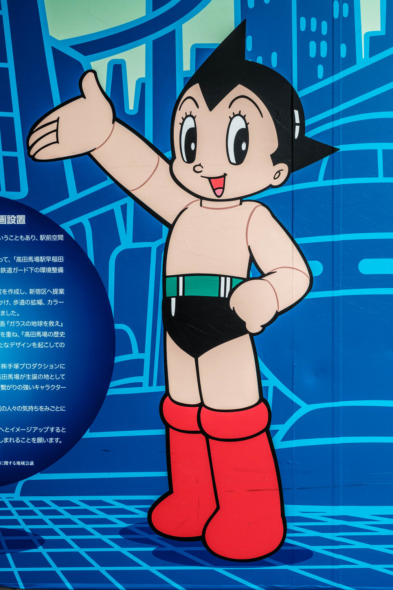
Источники аниме
Источниками сюжета для японской анимации могут быть разные произведения.
-
Может быть снято на основе манги (большинство
тайтлов
основаны на манге);
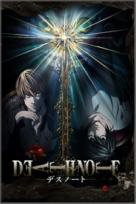"Тетрадь смерти"
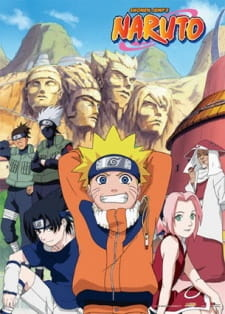"Наруто"
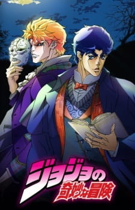"Невероятные приключения ДжоДжо"
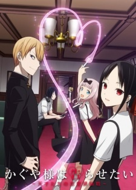"Госпожа Кагуя: в любви как на войне"
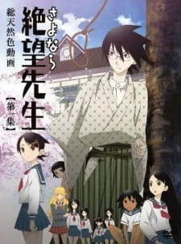"Прощай, унылый учитель"
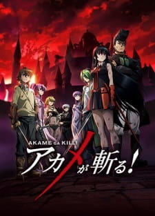"Убийца Акаме!" и т.д.
-
Может быть снято на основе ранобэ;
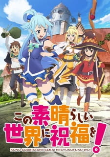"Этот замечательный мир!"("Konosuba")
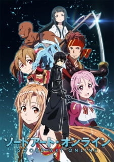"Мастера Меча Онлайн"("Sword Art Online")
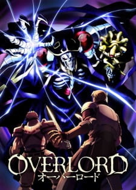"Повелитель"
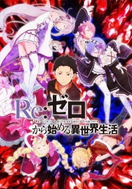"Re:Zero"
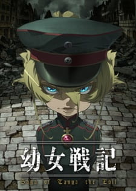"Военная хроника маленькой девочки"
-
Может быть снято на основе компьютерной игры(чаще всего визуальной новеллы);
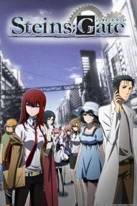"Steins;Gate"
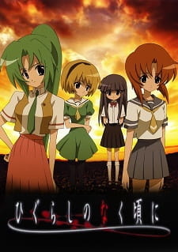"Когда плачут цикады"
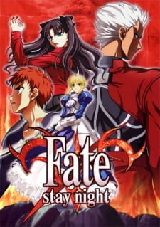"Судьба/Ночь схватки"
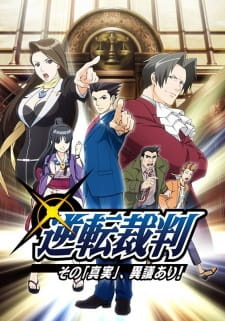"Переворотный суд"
-
Может быть оригинальным аниме, то есть, не быть основано ни на чем.
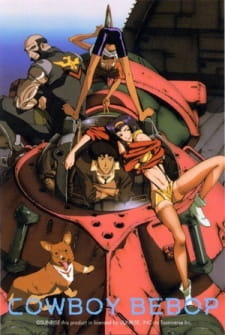"Ковбой Бибоп"
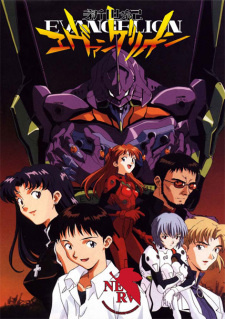"Евангелион нового поколения"
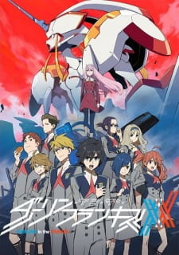"Милый во Франксе"
Вы можете пройти тест на знание источников аниме. Но учтите - в нем
присутствуют вопросы, которых здесь нет!
Аниме, как и прочая видеопродукция, создаётся с расчётом на какой-либо конкретный способ
распространения.
Эти способы включают в себя показ по телевидению, в кинотеатрах, продажу на видеоносителях, распространение через
Интернет.
Есть несколько форматов распространения:
- Телесериал(TV) - аниме, состоящее из множества коротких серий,
предназначенное для показа по телевидению с определённой периодичностью.
Это наиболее распространённый формат для аниме.
Как правило, длительность одной серии составляет 23—25 минут,
что вместе с рекламой образует стандартный блок в программе вещания — полчаса.
Иногда можно встретить 12-минутные серии, еще реже - 5-минутные.
Продолжительность телесериала обычно кратна сезону(12-13 серий),
хотя существуют сериалы, продолжительность которых больше.
Иногда к телесериалам выпускают дополнительные или бонусные серии (спешлы, TV-special).
Часто они длиннее обычных и не связаны напрямую с базовым сюжетом телесериала, хотя и основаны на нём.
История в них представляется ответвлением основного сюжета или сменой точки зрения на события,
но совершенно не меняет текущее положение вещей в сериале.
Обычно дополнительные серии создаются к праздникам, сменам сезона телесериала,
иногда выходят после завершения показа аниме на телевидении.
- OVA(Original Video Animation) - аниме, созданное специально для выпуска на видеоносителях,
таких как видеокассеты или DVD. Обычно OVA представляет собой фильм или короткий сериал — от двух до шести
серий,
который создаётся без расчёта на показ по телевидению.
Тем не менее случается, что популярный OVA-сериал всё-таки попадает на телеэкраны.
В настоящее время стандартная продолжительность одной серии OVA — 23—25 минут, практически как и телевизионной.
В 1980-е же и в начале 1990-х выпускались часовые и более длинные OVA.
- Фильм - аниме, предназначенное для показа в кинотеатре.
Как правило, это полнометражные (от 60 минут) фильмы, отличающиеся более высоким по сравнению с другими
форматами качеством анимации и,
соответственно, более высокими затратами на производство.
Полнометражные аниме представлены как самостоятельными произведениями, так и дополнениями к популярным
телесериалам.
В более редких случаях после успешной демонстрации полнометражного фильма выпускается телесериал.
- ONA (Original Network Animation) - аниме, специально созданное для распространения в Интернете.
Произведения, созданные как ONA, пока ещё очень редки, и обычно их продолжительность невелика.
↑Наверх↑